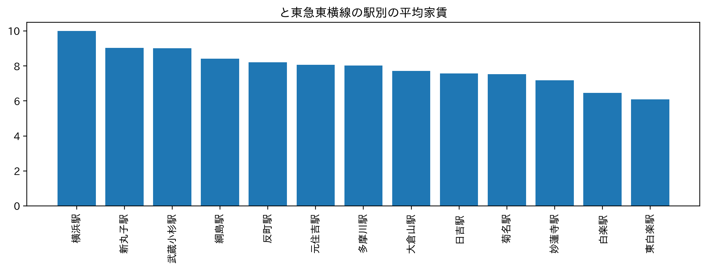
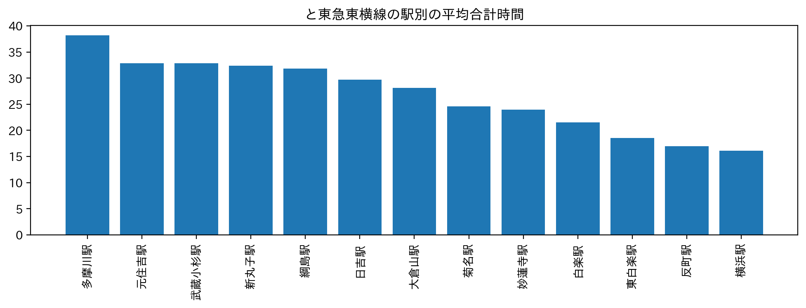
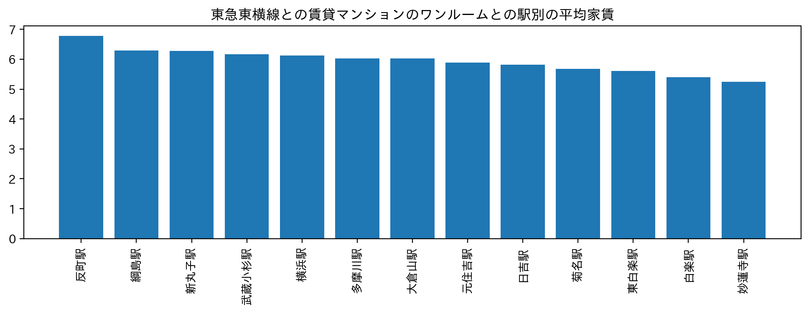

【ターゲットの決定】
今回ターゲットとするのは、
サークルで横浜キャンパスまで行かなければならない、みなとみらいキャンパスに通う女子大学生です。
このターゲットを定めた上で、次に物件の条件を考えてみました。
- 2階以上
- みなとみらいキャンパスまで1時間以内かつ横浜キャンパスにも近い
- 横浜キャンパスの最寄りとみなとみらいキャンパスの最寄りが直通している東横線沿い
- 家賃が6・7万円程度
【Pythonで検索】
次に、先ほど定めた条件で物件を調べていきたいと思います。

こちらは東横線沿いの駅周辺の物件を、家賃の価格順で並べたグラフになります。
見てわかる通り、東白楽駅と白楽駅が他に比べて安いです。

こちらは、学校までの合計時間順に駅を並べたグラフになります。家賃が比較的安い東白楽駅・白楽駅が上位に・・！
この二つのグラフを基に家賃・学校までの合計時間を考えると、
白楽駅と
東白楽駅周辺の物件が良いのでは無いでしょうか？
①
≪みなとみらいキャンパスまで1時間以内かつ横浜キャンパスにも近い≫
②
≪東横線沿いの駅周辺の物件≫
③
≪家賃6・7万円程度≫
これらの条件は満たしています。
次に、
≪2階以上である≫という条件も含めて考えてみましょう。

こちらは、東横線沿いの駅周辺ワンルームマンションを平均家賃順に並べたグラフになります。
アパートに比べ、マンションの方が2階以上のものが多く、セキュリティ面も安心できる点からマンションに絞りました。
マンションに絞ってもやはり
白楽駅・
東白楽駅が比較的家賃が安いということが分かりました！
【検索の結果・勧める物件】
今回の検索結果から、みなとみらいキャンパス・横浜キャンパスに通う女子大生におすすめする物件は
白楽駅または
東白楽駅周辺のマンションであると考えました！！